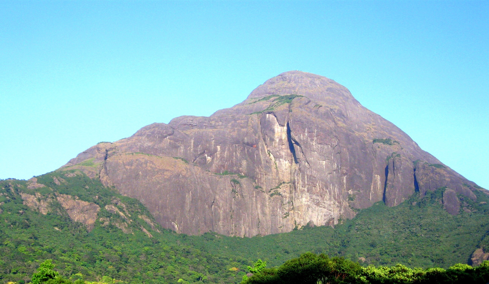
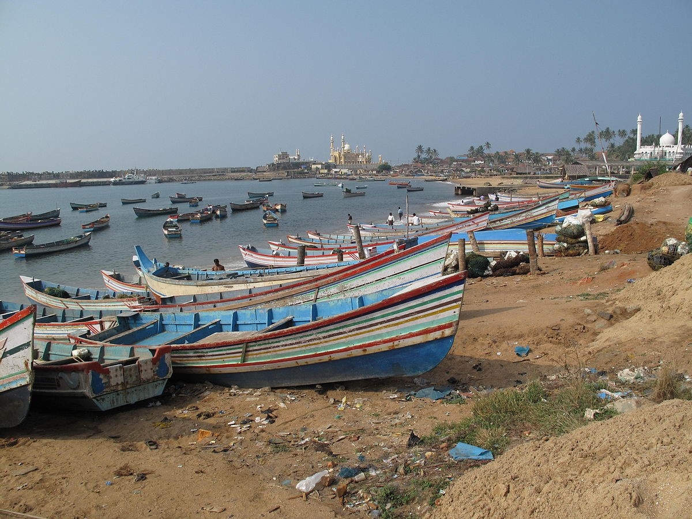

Agasthyarkoodam
Agasthyarkoodam is one of the highest peaks in the Western Ghats and is the second highest peak in Kerala after Anamudi which is the highest peak in the Western Ghats. Tradition says that the great sage Agasthya lived on this peak. Noted for its abundant ayurvedic herbs, the cone shaped mountain is a centre of pilgrimage for Hindus because of Agastya, who was a confirmed bachelor.

Vizhinjam
Vizhinjam is believed to have been an ancient port. Now, Vizhinjam is a fishing harbour, with a light house. The Portuguese and the Dutch had commercial establishments here. The Portuguese have built a church in Vizhinjam near to the sea shore, which is still functional and is referred as the Old Vizhinjam Church.
.